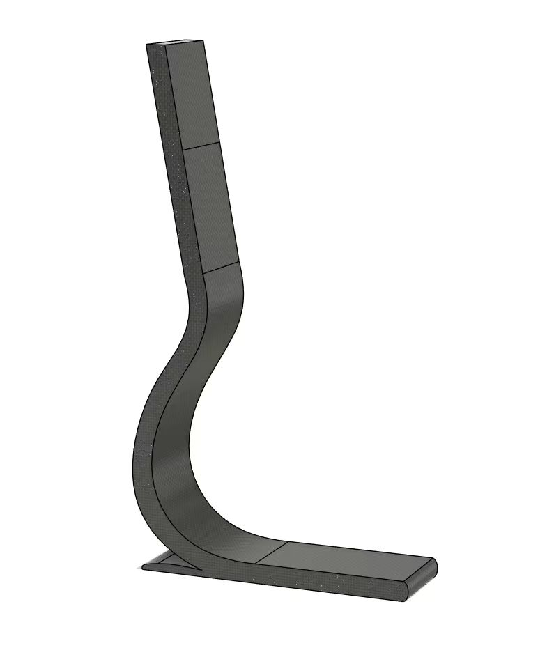

Running
Blade.
A lighter step.
A more considered curve.

Original CAD / Concept geometryPeak stress after one
geometry iteration.
Estimated mass71.12 Hz
First natural frequency
Using simulation to turn a critical bend into a better design decision.
- Designer
- Cici Song
- Tools
- Fusion 360 · ANSYS 2025 R2
- Scope
- Parametric CAD · Material comparison · Static, modal and simplified fatigue assessment
01 / LET THE FINDINGS SHAPE THE FORM
Three refinements.
25.1% lower peak stress.
Select a geometry change, then inspect the load case, material comparison and mesh checks behind the reported CFRP improvement.
Ease the transition.
Increasing the inner radius softens the transition where peak stress concentrates.
All three changes were analysed together; individual effects were not isolated.
Initial → refined CFRP under one load case; greater stiffness alone does not prove better running performance.
02 / DEFINE THE PROBLEM
The brief
& loading assumptions.
A curved blade stores and releases elastic energy. Compare mass, structural response and dynamic behaviour under one defined load case.
Load-direction schematic · Not a deformation simulation
SELECT A BOUNDARY CONDITION
The fixed upper attachment represents the socket connection.
03 / COMPARE THE EVIDENCE
Material comparison
& simulation results.
Aluminium deflects slightly less; CFRP offers roughly half the mass and a higher first natural frequency. Compare the reported cases below.
Each contour uses its own colour scale. Compare numeric values, not colour alone.
INITIAL / CFRP
The inner curve is the critical region. CFRP is lighter than aluminium, but the initial geometry still concentrates stress in the bend.
Same load case: 2,100 N normal + 500 N backward friction. Fine-mesh results; rounded as in the showcase.
Keep CFRP. Refine the curve.
Material choice alone cannot resolve a local geometric stress concentration.
04 / CHECK THE NUMBERS BEFORE TRUSTING THE TREND
Mesh convergence
& fatigue limits.
Compare three recorded CFRP meshes using quadratic elements and local refinement. This checks mesh sensitivity, not a live simulation.
Global/local element sizes. Vertical axes do not start at zero; changes use the displayed report values.
Change from the previous mesh. Below the 1% criterion.
Illustration of increasing mesh density; the original solves used locally refined quadratic elements.
A useful check.
A limited claim.
Without a CFRP S–N curve, the report compares 3× peak equivalent stress with a representative 717 MPa strength.
Passing this strength proxy does not establish one million fatigue cycles or laminate failure resistance.
Life improves
in the model.
Both exceed 10⁶ cycles in the report’s model; physical cyclic testing remains pending.
05 / MAKE A DEFENSIBLE DESIGN DECISION
Outcome:
refined CFRP.
Refined CFRP offers the preferred balance of mass, stress and first natural frequency under the study’s assumptions.
Refine, then compare.
Lower stress and deformation, slightly higher first natural frequency, and estimated mass below 1 kg.
From model to use.
Next: physical load/fatigue tests, laminate-specific failure analysis and broader gait cases before claiming running performance.
Close the design loop.
Parametric CAD, mesh checks, material comparison and interpretation of static, modal and fatigue results.
Source: Cici Song’s “Finite Element Analysis of a Prosthetic Running Blade” and showcase. Original plots; interactions explain recorded cases.